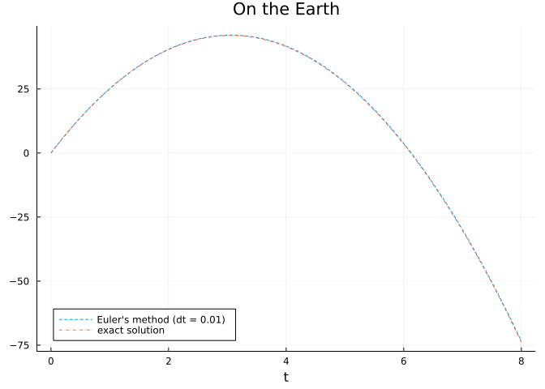
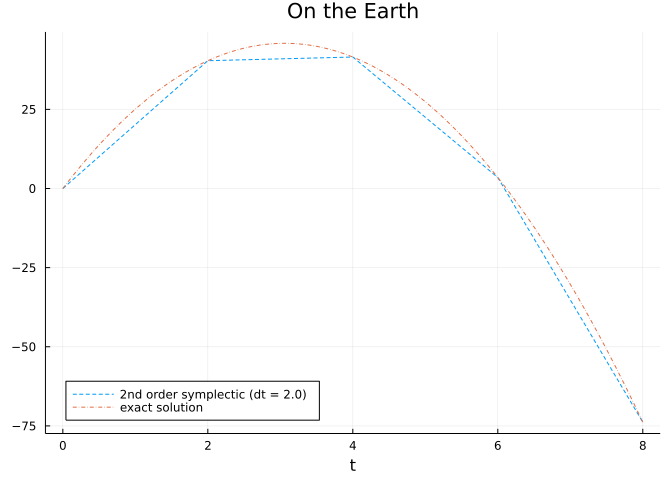

struct Problem{G, Y0, V0, TS}
g::G
y0::Y0
v0::V0
tspan::TS
end
Problem(;g=9.80665, y0=0.0, v0=30.0, tspan=(0.0,8.0)) = Problem(g, y0, v0, tspan)ProblemThis section uses these add-on packages:
using Plots
using MonteCarloMeasurementsThe DifferentialEquations.jl package is an entry point to a suite of Julia packages for numerically solving differential equations in Julia and other languages. A common interface is implemented that flexibly adjusts to the many different problems and algorithms covered by this suite of packages. In this section, we review a very informative post by discourse user @genkuroki which very nicely demonstrates the usefulness of the problem-algorithm-solve approach used with DifferentialEquations.jl. We slightly modify the presentation below for our needs, but suggest a perusal of the original post.
The motion of an object under a uniform gravitational field is of interest.
The parameters that govern the equation of motions are the gravitational constant, g; the initial height, y0; and the initial velocity, v0. The time span for which a solution is sought is tspan.
A problem consists of these parameters. Typical Julia usage would be to create a structure to hold the parameters, which may be done as follows:
struct Problem{G, Y0, V0, TS}
g::G
y0::Y0
v0::V0
tspan::TS
end
Problem(;g=9.80665, y0=0.0, v0=30.0, tspan=(0.0,8.0)) = Problem(g, y0, v0, tspan)ProblemThe above creates a type, Problem, and a default constructor with default values. (The original uses a more sophisticated setup that allows the two things above to be combined.)
Just calling Problem() will create a problem suitable for the earth, passing different values for g would be possible for other planets.
To solve differential equations there are many different possible algorithms. Here is the construction of two types to indicate two algorithms:
struct EulerMethod{T}
dt::T
end
EulerMethod(; dt=0.1) = EulerMethod(dt)
struct ExactFormula{T}
dt::T
end
ExactFormula(; dt=0.1) = ExactFormula(dt)ExactFormulaThe above just specifies a type for dispatch –- the directions indicating what code to use to solve the problem. As seen, each specifies a size for a time step with default of 0.1.
A type for solutions is useful for different show methods or other methods. One can be created through:
struct Solution{Y, V, T, P<:Problem, A}
y::Y
v::V
t::T
prob::P
alg::A
endThe different algorithms then can be implemented as part of a generic solve function. Following the post we have:
solve(prob::Problem) = solve(prob, default_algorithm(prob))
default_algorithm(prob::Problem) = EulerMethod()
function solve(prob::Problem, alg::ExactFormula)
g, y0, v0, tspan = prob.g, prob.y0, prob.v0, prob.tspan
dt = alg.dt
t0, t1 = tspan
t = range(t0, t1 + dt/2; step = dt)
y(t) = y0 + v0*(t - t0) - g*(t - t0)^2/2
v(t) = v0 - g*(t - t0)
Solution(y.(t), v.(t), t, prob, alg)
end
function solve(prob::Problem, alg::EulerMethod)
g, y0, v0, tspan = prob.g, prob.y0, prob.v0, prob.tspan
dt = alg.dt
t0, t1 = tspan
t = range(t0, t1 + dt/2; step = dt)
n = length(t)
y = Vector{typeof(y0)}(undef, n)
v = Vector{typeof(v0)}(undef, n)
y[1] = y0
v[1] = v0
for i in 1:n-1
v[i+1] = v[i] - g*dt # F*h step of Euler
y[i+1] = y[i] + v[i]*dt # F*h step of Euler
end
Solution(y, v, t, prob, alg)
endsolve (generic function with 3 methods)The post has a more elegant means to unpack the parameters from the structures, but for each of the above, the parameters are unpacked, and then the corresponding algorithm employed. As of version v1.7 of Julia, the syntax (;g,y0,v0,tspan) = prob could also be employed.
The exact formulas, y(t) = y0 + v0*(t - t0) - g*(t - t0)^2/2 and v(t) = v0 - g*(t - t0), follow from well-known physics formulas. Each answer is wrapped in a Solution type so that the answers found can be easily extracted in a uniform manner.
For example, plots of each can be obtained through:
earth = Problem()
sol_euler = solve(earth)
sol_exact = solve(earth, ExactFormula())
plot(sol_euler.t, sol_euler.y;
label="Euler's method (dt = $(sol_euler.alg.dt))", ls=:auto)
plot!(sol_exact.t, sol_exact.y; label="exact solution", ls=:auto)
title!("On the Earth"; xlabel="t", legend=:bottomleft)
Following the post, since the time step dt = 0.1 is not small enough, the error of the Euler method is rather large. Next we change the algorithm parameter, dt, to be smaller:
earth₂ = Problem()
sol_euler₂ = solve(earth₂, EulerMethod(dt = 0.01))
sol_exact₂ = solve(earth₂, ExactFormula())
plot(sol_euler₂.t, sol_euler₂.y;
label="Euler's method (dt = $(sol_euler₂.alg.dt))", ls=:auto)
plot!(sol_exact₂.t, sol_exact₂.y; label="exact solution", ls=:auto)
title!("On the Earth"; xlabel="t", legend=:bottomleft)
It is worth noting that only the first line is modified, and only the method requires modification.
Were the moon to be considered, the gravitational constant would need adjustment. This parameter is part of the problem, not the solution algorithm.
Such adjustments are made by passing different values to the Problem constructor:
moon = Problem(g = 1.62, tspan = (0.0, 40.0))
sol_eulerₘ = solve(moon)
sol_exactₘ = solve(moon, ExactFormula(dt = sol_euler.alg.dt))
plot(sol_eulerₘ.t, sol_eulerₘ.y;
label="Euler's method (dt = $(sol_eulerₘ.alg.dt))", ls=:auto)
plot!(sol_exactₘ.t, sol_exactₘ.y; label="exact solution", ls=:auto)
title!("On the Moon"; xlabel="t", legend=:bottomleft)
The code above also adjusts the time span in addition to the graviational constant. The algorithm for exact formula is set to use the dt value used in the euler formula, for easier comparison. Otherwise, outside of the labels, the patterns are the same. Only those things that need changing are changed, the rest comes from defaults.
The above shows the benefits of using a common interface. Next, the post illustrates how other authors could extend this code, simply by adding a new solve method. For example,
struct Symplectic2ndOrder{T}
dt::T
end
Symplectic2ndOrder(;dt=0.1) = Symplectic2ndOrder(dt)
function solve(prob::Problem, alg::Symplectic2ndOrder)
g, y0, v0, tspan = prob.g, prob.y0, prob.v0, prob.tspan
dt = alg.dt
t0, t1 = tspan
t = range(t0, t1 + dt/2; step = dt)
n = length(t)
y = Vector{typeof(y0)}(undef, n)
v = Vector{typeof(v0)}(undef, n)
y[1] = y0
v[1] = v0
for i in 1:n-1
ytmp = y[i] + v[i]*dt/2
v[i+1] = v[i] - g*dt
y[i+1] = ytmp + v[i+1]*dt/2
end
Solution(y, v, t, prob, alg)
endsolve (generic function with 4 methods)Had the two prior methods been in a package, the other user could still extend the interface, as above, with just a slight standard modification.
The same approach works for this new type:
earth₃ = Problem()
sol_sympl₃ = solve(earth₃, Symplectic2ndOrder(dt = 2.0))
sol_exact₃ = solve(earth₃, ExactFormula())
plot(sol_sympl₃.t, sol_sympl₃.y; label="2nd order symplectic (dt = $(sol_sympl₃.alg.dt))", ls=:auto)
plot!(sol_exact₃.t, sol_exact₃.y; label="exact solution", ls=:auto)
title!("On the Earth"; xlabel="t", legend=:bottomleft)
Finally, the author of the post shows how the interface can compose with other packages in the Julia package ecosystem. This example uses the external package MonteCarloMeasurements which plots the behavior of the system for perturbations of the initial value:
earth₄ = Problem(y0 = 0.0 ± 0.0, v0 = 30.0 ± 1.0)
sol_euler₄ = solve(earth₄)
sol_sympl₄ = solve(earth₄, Symplectic2ndOrder(dt = 2.0))
sol_exact₄ = solve(earth₄, ExactFormula())
ylim = (-100, 60)
P = plot(sol_euler₄.t, sol_euler₄.y;
label="Euler's method (dt = $(sol_euler₄.alg.dt))", ls=:auto)
title!("On the Earth"; xlabel="t", legend=:bottomleft, ylim)
Q = plot(sol_sympl₄.t, sol_sympl₄.y;
label="2nd order symplectic (dt = $(sol_sympl₄.alg.dt))", ls=:auto)
title!("On the Earth"; xlabel="t", legend=:bottomleft, ylim)
R = plot(sol_exact₄.t, sol_exact₄.y; label="exact solution", ls=:auto)
title!("On the Earth"; xlabel="t", legend=:bottomleft, ylim)
plot(P, Q, R; size=(720, 600))The only change was in the problem, Problem(y0 = 0.0 ± 0.0, v0 = 30.0 ± 1.0), where a different number type is used which accounts for uncertainty. The rest follows the same pattern.
This example, shows the flexibility of the problem-algorithm-solver pattern while maintaining a consistent pattern for execution.